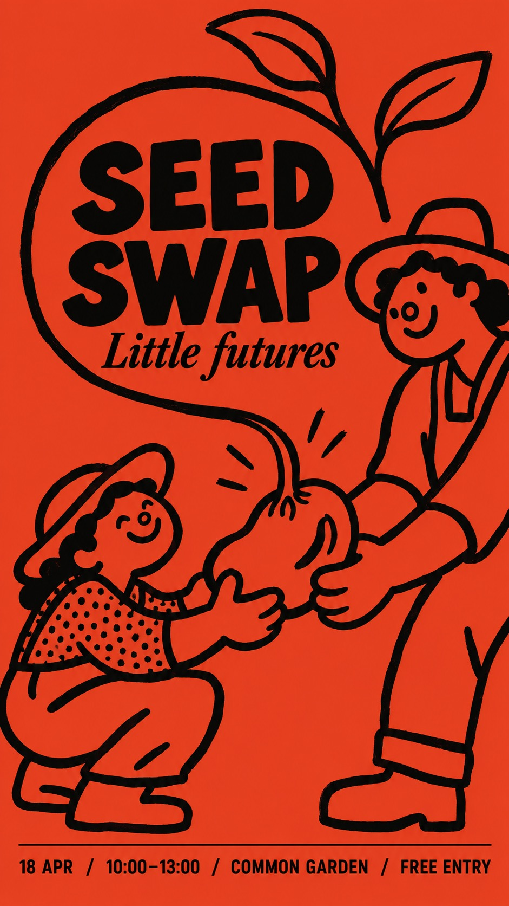
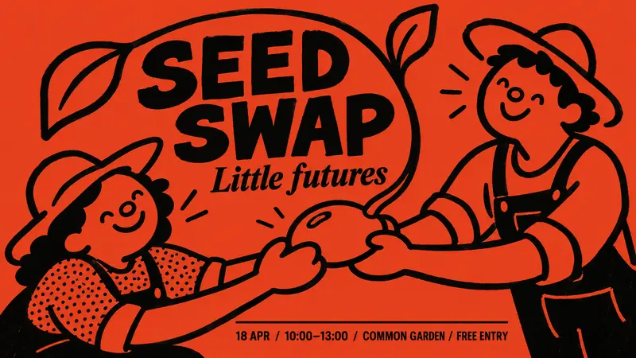
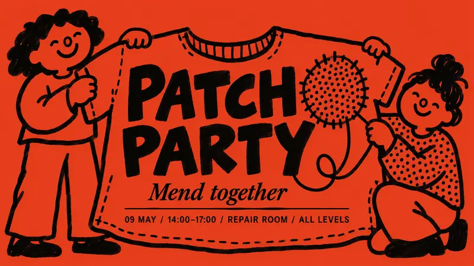
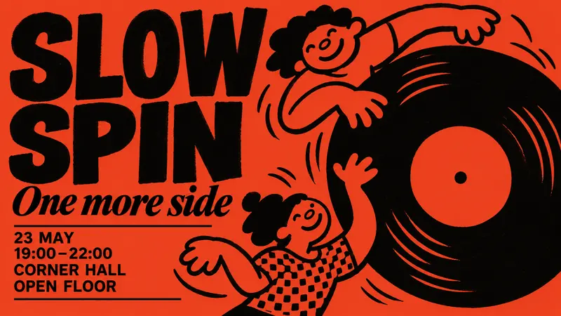
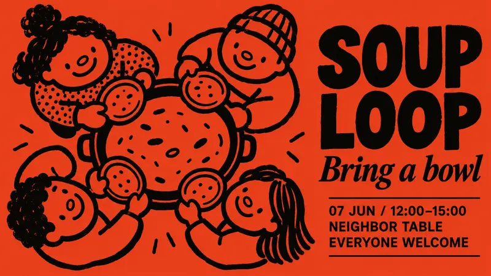

Type Posters · AI image style prompt
Vermilion Marker Folk
Full-bleed vermilion folk event posters with uneven thick black marker strokes, naive round-headed figures sharing one action, dense dot textures and a compact two-typeface hierarchy.

4 example cases
Same style.json, different subjects. Each case's values are in the examples section of the JSON.




What this style does
Folk event poster in full-bleed vermilion with uneven thick black marker strokes: naive round-headed figures sharing an action, patches of dense dot texture, and a compact two-typeface information hierarchy. By default it redesigns the figures' interaction and layout around a new theme.
Signature traits
- Use a full-bleed warm vermilion-red ground with near-black ink only; figures are red interiors bounded by black strokes, not pale skin or white-filled drawings.
- Draw with broad, blunt, uneven black marker or loaded-brush contours: pressure variation, slight wobble, occasional blunt dry terminals and simple closed loops.
- Characters have large irregular rounded heads, minimal dot or curved eyes, a small ring or oval nose, generous smile and simplified mitten-like hands; the tone is sociable and unselfconscious.
- Keep the image flat and graphic with no shading, perspective rendering or dimensional lighting; red negative space remains spacious between expressive black forms.
- Confine small dense irregular black dots or broken checks to one or two clothing or textile zones; keep the ground and most red interiors clear.
- Let the new event determine the number and arrangement of characters, their gestures, the scale of the shared object and the route of the viewer's eye.
style.json
{
"schema_version": "2.2",
"style_version": "1.0.0",
"style_name": "Vermilion Marker Folk",
"style_slug": "vermilion-marker-folk",
"style_summary": "Folk event poster in full-bleed vermilion with uneven thick black marker strokes: naive round-headed figures sharing an action, patches of dense dot texture, and a compact two-typeface information hierarchy. By default it redesigns the figures' interaction and layout around a new theme.",
"category": "Type Posters",
"environment_variables": {
"ASPECT_RATIO": "9:16 or 16:9; design the composition for the chosen orientation.",
"STYLE_FIDELITY_ANCHORS": "Prioritized CORE and FLEX rules injected from the anchor list.",
"SOURCE_CONTENT_TO_AVOID": "Source-specific imagery, wording and identity to replace.",
"MAIN_TEXT": "Exact two-word event headline.",
"SECONDARY_TEXT": "Exact short italic serif phrase.",
"EVENT_DETAILS": "Exact short event information; line breaks or dot separators may change.",
"SUBJECT_ACTION": "Concrete characters and a theme-defining shared action.",
"DESIGN_DIRECTION": "The case's visible design intention.",
"LANDSCAPE_PLAN": "Composition and type guidance specific to 16:9.",
"PORTRAIT_PLAN": "Composition and type guidance specific to 9:16."
},
"style_fidelity_anchors": [
"[CORE] Use a full-bleed warm vermilion-red ground with near-black ink only; figures are red interiors bounded by black strokes, not pale skin or white-filled drawings.",
"[CORE] Draw with broad, blunt, uneven black marker or loaded-brush contours: pressure variation, slight wobble, occasional blunt dry terminals and simple closed loops.",
"[CORE] Characters have large irregular rounded heads, minimal dot or curved eyes, a small ring or oval nose, generous smile and simplified mitten-like hands; the tone is sociable and unselfconscious.",
"[CORE] Keep the image flat and graphic with no shading, perspective rendering or dimensional lighting; red negative space remains spacious between expressive black forms.",
"[CORE] Confine small dense irregular black dots or broken checks to one or two clothing or textile zones; keep the ground and most red interiors clear.",
"[FLEX] Let the new event determine the number and arrangement of characters, their gestures, the scale of the shared object and the route of the viewer's eye.",
"[FLEX] Pair weighty readable grotesk headline lettering with a short contrasting italic display-serif line; stacking, curvature, placement and scale may respond to the scene.",
"[FLEX] Use a few thin black editorial rules to organize concise information where useful; choose separate, purposeful compositions for landscape and portrait."
],
"source_content_to_avoid": [
"The exact three frontal figures shoulder-to-shoulder, each holding a long vertical churro or pencil-like snack.",
"The chocolate-and-churros drawing workshop premise and its particular hand poses.",
"All original Spanish event wording, prices, dates, venue, email address and reservations text.",
"The source club name, drawn pencil emblem, brand lettering and distinctive identity block.",
"The original four-column bottom strip and its exact sequence or proportional layout."
],
"visual_deconstruction": {
"source_observation": "A landscape red-and-black printed event poster. Three oversized childlike figures dominate the upper area; four narrow text zones occupy the lower band. Broad rough black loops describe hair, faces, hands and long snacks. Stippling is isolated in clothing and one snack. Sans-serif information contrasts with an italic serif event subtitle.",
"reusable_system": "Two-ink economy, relaxed brush drawing, happy simplified people, selective patterned fields and legible event typography.",
"reinterpretation_scope": "Creative reinterpretation within the extracted style. Case concepts must be visible in interaction and hierarchy, rather than repeating the source with substituted props."
},
"composition": {
"hierarchy": "One shared activity is the focal illustration; a concise headline carries comparable authority; small event details form an orderly subordinate tier.",
"negative_space": "Leave continuous red breathing room for text and around black contours; do not fill all gaps with decoration.",
"ratio_adaptation": "Use the applicable case plan; recompose positions and title relationships instead of cropping or stretching the companion.",
"flexibility": "No universal character count, fixed title corner, mandatory footer band or column count."
},
"typography": {
"headline": "Very bold black grotesk sans-serif, direct and readable. Two-word title can stack, stretch across a space or follow a broad arc without illegible deformation.",
"secondary": "Short black italic display-serif phrase, heavier and more expressive than the compact information text.",
"information": "Plain medium or bold sans-serif in short lines, with ample enough spacing to remain legible.",
"rules": "A few thin black rules support hierarchy; no copied wordmark, seal or invented brand emblem."
},
"color_palette": {
"ground": {
"hex": "#E84125",
"role": "Warm full-bleed vermilion; approximately 75–85% visible red."
},
"ink": {
"hex": "#080807",
"role": "Near-black contours, lettering, small solid fields and stippled clothing; approximately 15–25%."
},
"relationships": "A strict two-ink appearance. Small variation from raster antialiasing is acceptable; no white, cream, multicolor accents or gradients."
},
"image_treatment": {
"medium": "Hand-drawn marker and brush illustration reproduced as a flat two-color event print.",
"texture": "Slight irregularity at black contour edges and occasional dry-brush terminals, visible at stroke scale. Dense hand-made stippling or broken checks at small mark scale only inside one or two textile areas. Very low background texture, no uniform noise overlay.",
"lighting": "Flat ink with no light source, shading, cast shadow or 3D relief.",
"finish": "Preserve drawing wobble without adding global distress, torn paper or polished vector smoothness."
},
"design_rules": [
"Make the event visible through a coherent shared action rather than placing passive people beside a prop.",
"Render exactly the supplied title, subtitle and compact event information without adding contacts, logos or extra slogans.",
"Keep type separate enough from busy strokes for every required word to be read.",
"Use deliberate simplification: one dominant thematic object or interaction and only supporting marks that explain it.",
"Follow the composition plan for the selected ratio; keep the same case concept across its pair.",
"Retain the red/black relationship, broad line character and local textile pattern even when layout changes."
],
"do": [
"Use large rounded characters, blunt smiling features and loose mitten hands.",
"Let shared gestures turn the topic into a visual idea.",
"Give the headline and illustration clear complementary space.",
"Keep patterned regions small relative to clear red surfaces."
],
"avoid": [
"Photorealism, realistic anatomy, gradients, dimensional objects, shadows or polished 3D.",
"Thin vector outlines, uniform geometric contours or cute white-faced clip art.",
"Repeated three-person frontal portraits or interchangeable bottom four-column templates.",
"Full-page grunge, paper stains, fake registration errors or random decorative confetti.",
"Unreadable lettering, duplicated limbs, tangled hand-object junctions or text cut by edges."
],
"prompt_template": "Use case: ads-marketing. Create one finished full-bleed illustrated community-event poster in {ASPECT_RATIO}. It must stand alone as a complete raster design. Apply the following visual system in priority order:\n{STYLE_FIDELITY_ANCHORS}\nNew scene and action: {SUBJECT_ACTION}\nDesign intention: {DESIGN_DIRECTION}\nUse only the plan matching the requested ratio. Landscape 16:9 plan: {LANDSCAPE_PLAN}\nPortrait 9:16 plan: {PORTRAIT_PLAN}\nExact visible text, with no other wording: main headline \"{MAIN_TEXT}\"; short italic display-serif phrase \"{SECONDARY_TEXT}\"; event information \"{EVENT_DETAILS}\". Preserve all words and numbers; line breaks and separator dots may change. Make the headline bold black grotesk, subtitle black italic serif and details readable black sans-serif. Compose type and scene together, with calm red space and a few thin organizing rules only where useful. Background warm vermilion #E84125, near-black #080807 ink; red interiors of figures remain the same red as the ground. Broad blunt irregular marker/brush outlines, simple dot/curved eyes, oval ring noses, smiles and mitten hands. Keep occasional dry terminals at stroke scale and small dense irregular black stippling or broken checks only in one or two garment/textile regions; ground stays nearly clean. Everything is flat ink without a light source. Replace these source-specific elements completely:\n{SOURCE_CONTENT_TO_AVOID}\nNo white or pale fills, no gradients, no 3D, no photographic detail, no slick vector finish, no globally distressed paper, no watermarks or brand emblems. Do not let illustration strokes obscure required wording.",
"negative_prompt": "photorealistic, 3D, shaded faces, white skin, cream background, extra accent colors, gradients, shadows, thin vector strokes, smooth corporate icon art, repeated frontal trio, long vertical snack props, copied four-column footer, source club logo, fake contact information, unreadable text, cropped wording, extra fingers, detached hands, all-over grunge, random filler marks",
"examples": [
{
"case_name": "seed-swap",
"values": {
"MAIN_TEXT": "SEED SWAP",
"SECONDARY_TEXT": "Little futures",
"EVENT_DETAILS": "18 APR / 10:00–13:00 / COMMON GARDEN / FREE ENTRY",
"SUBJECT_ACTION": "Two delighted rounded gardeners, one low on the left and one tall on the right, pass a single giant bean seed between clearly readable mitten hands. From the bean rises one broad looping sprout that bends toward them. One small shirt area has irregular black stippling.",
"DESIGN_DIRECTION": "Turn the exchanged seed into the visual hinge: two people are linked by one germinating bean; the sprout creates a generous open arch for the headline. Keep seed, hands and sprout junction readable.",
"LANDSCAPE_PLAN": "Build an asymmetric low-left to high-right exchange across the width. Let the broad sprout arch frame the large two-word headline in open upper-middle red space; a short lower information run has a thin rule. Avoid a row of frontal heads.",
"PORTRAIT_PLAN": "Rebuild as an ascending exchange: lower-left gardener reaches toward upper-right gardener, with the large bean near the middle and a sprout rising through the tall format. Stack the headline in upper red space inside the arc; reserve clear lower space for subtitle and compact details."
}
},
{
"case_name": "patch-party",
"values": {
"MAIN_TEXT": "PATCH PARTY",
"SECONDARY_TEXT": "Mend together",
"EVENT_DETAILS": "09 MAY / 14:00–17:00 / REPAIR ROOM / ALL LEVELS",
"SUBJECT_ACTION": "Two joyful rounded menders stand on opposite sides of one oversized loose shirt, holding and repairing it together. A large circular patch sits on the shirt and a thick loose thread draws one readable connecting loop; one panel is densely stippled. No long sewing tools in their hands.",
"DESIGN_DIRECTION": "Make the shared shirt the organizing shape, with its open red body becoming a title field. The people and one thread loop visually connect separated halves of the poster, giving mending a social meaning.",
"LANDSCAPE_PLAN": "Stretch the big shirt across the middle width, with a different-height mender at either end. Integrate the bold title into the unpatterned red shirt area, and place the short italic phrase nearby. Use one low thin rule and a compact detail line.",
"PORTRAIT_PLAN": "Hang the shirt vertically as the main tall shape. One mender peers over an upper shoulder and the second kneels beside its lower hem; both touch the same shirt. Stack the title within the clear red torso, with the small subtitle and details in lower open space."
}
},
{
"case_name": "slow-spin",
"values": {
"MAIN_TEXT": "SLOW SPIN",
"SECONDARY_TEXT": "One more side",
"EVENT_DETAILS": "23 MAY / 19:00–22:00 / CORNER HALL / OPEN FLOOR",
"SUBJECT_ACTION": "Two loose rounded dancers move around one huge black vinyl record with a large red circular center. The record is tilted as a flat graphic circle, not a dimensional object. One dancer leans in from a high diagonal while another reaches upward from below; use one small broken-check shirt patch.",
"DESIGN_DIRECTION": "Use circular rhythm: the large record and dancers' sweeping arms make a clear rotating gesture. Let the title counterbalance the disc instead of repeating a horizontal portrait group.",
"LANDSCAPE_PLAN": "Let a huge flat black record occupy the right half and crop slightly at the right edge, with its red center fully visible. One dancer leans over its upper-left edge and one swings below. Put an enormous stacked title on the left with subtitle and organized details below it.",
"PORTRAIT_PLAN": "Place the record near the center-lower area with dancers on opposite diagonals around it. Stack a strong title at the top, allow one broad arm to curve around the circle, and keep subtitle and short details readable near the bottom."
}
},
{
"case_name": "soup-loop",
"values": {
"MAIN_TEXT": "SOUP LOOP",
"SECONDARY_TEXT": "Bring a bowl",
"EVENT_DETAILS": "07 JUN / 12:00–15:00 / NEIGHBOR TABLE / EVERYONE WELCOME",
"SUBJECT_ACTION": "Four small smiling rounded neighbors gather in a loose overhead ring around one wide communal soup pot seen as a simple black oval rim with red interior. Each reaches one mitten hand with a small bowl toward the common center, forming a readable shared serving circle. One small textile region has dense irregular stippling. No steam-face trick or realistic cooking scene.",
"DESIGN_DIRECTION": "The gathering itself becomes a generous ring: alternating heads, short arms and little bowls guide attention toward a shared red center. The four-person radial grouping must feel different from a row of people holding upright items.",
"LANDSCAPE_PLAN": "Create a large off-center overhead ring toward the left, with four small heads spaced around the wide oval pot, leaving the right third as calm red space for the stacked title, italic subtitle and short ruled detail block.",
"PORTRAIT_PLAN": "Place the overhead ring high in the tall frame, with four clearly separated heads and arms around the pot. Use the lower red field for a large two-line title and subtitle, with a small orderly information block beneath. Preserve comfortable space between bowls, hands and lettering."
}
}
]
}